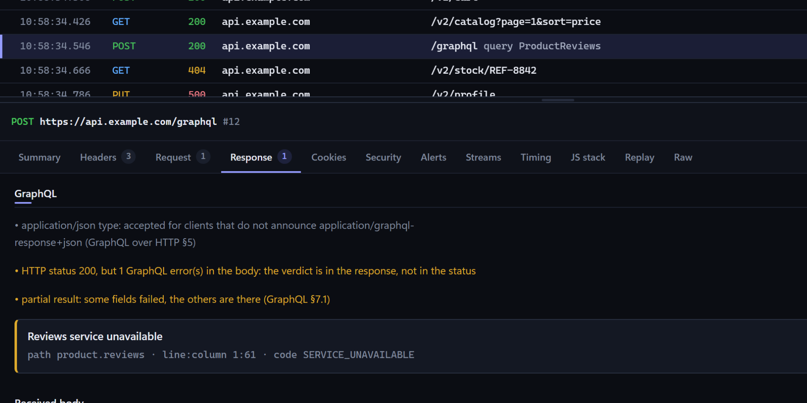
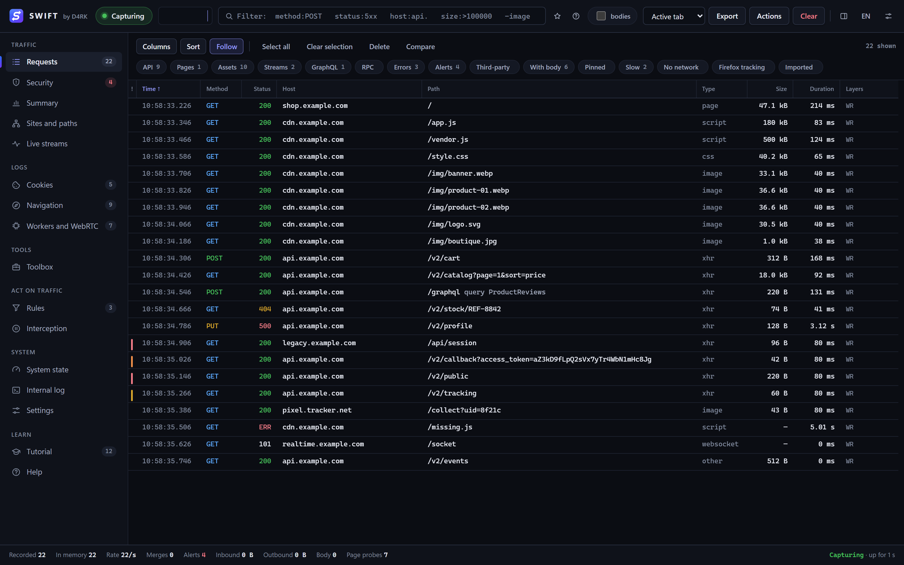
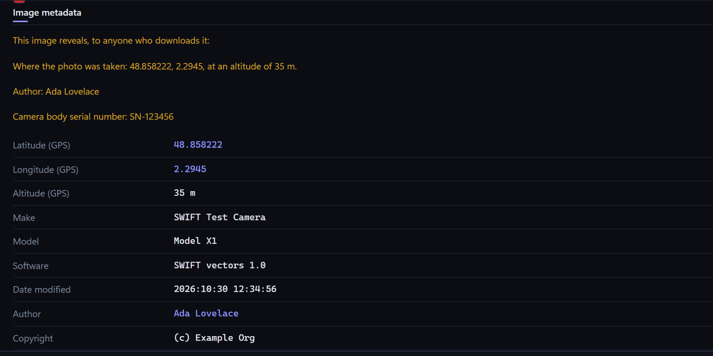
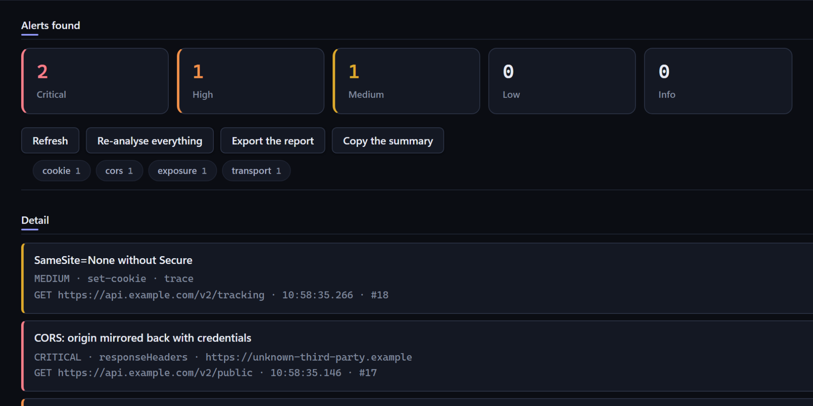

A 200 that hides an error
GraphQL, JSON-RPC and SOAP calls all look alike on the wire: one address, status 200. SWIFT names the operation in the table and reads the real answer.

every request, once
SWIFT is a network inspector for Firefox. It records every request, explains it in plain words, and lets you block, rewrite or replay it. No proxy. No certificate. No account. Nothing leaves your machine.

response · image/jpeg
Pictures often carry GPS coordinates, the author's name and the camera's serial number. Some sites strip them. Not all do.
SWIFT reads them from the image as it arrives — EXIF, XMP, PNG text — and tells you in one sentence what that picture reveals to anyone who downloads it. Paste an image into the toolbox and it does the same.

the questions you actually have
GraphQL, JSON-RPC and SOAP calls all look alike on the wire: one address, status 200. SWIFT names the operation in the table and reads the real answer.

A failed CORS request is paired with the preflight that caused it, and the header that said no is named.
Every JWT a request carries is read, and verified with the key its issuer publishes when the capture holds it.
The JavaScript stack behind fetch, XHR, sendBeacon and WebSocket calls, recorded with DevTools closed.
The User-Agent read honestly: Windows 11 still writes “NT 10.0”, so SWIFT says Windows 10/11 rather than guess.
Every finished request is audited on its own: exposed secrets, credentials in clear, cookies that will be rejected and why. If the capture cannot prove it, SWIFT does not say it.

rules · one click
Twelve ready-made templates, and every rule says in plain words what it will do before you turn it on.
honest comparison
| Question | SWIFT | Firefox DevTools | A debugging proxy (Charles) |
|---|---|---|---|
| What it sees | Firefox | The tab it is open on | Every app set to use it |
| Records with the tools closed | Yes | No | Yes |
| Reading HTTPS | Nothing to install | Nothing to install | Its own root certificate must be trusted |
| Rewrite, mock, pause by rule | Yes | Block, throttle, edit and resend | Yes |
| Price | Free, MIT licence | Free | Charles: USD 50 per licence |
A proxy sees what SWIFT cannot: your other apps and other browsers. SWIFT is the one already inside Firefox, and it keeps response bodies whole by default, where DevTools stops at 1 MiB. Figures from each tool's own documentation and price page, November 2026. SWIFT is an independent project, not affiliated with Mozilla or Charles.
the whole tour · eleven chapters
sixty seconds
.xpi from the release page.about:debugging#/runtime/this-firefox in Firefox.SWIFT is not on addons.mozilla.org yet: a temporary add-on goes away when Firefox restarts. It needs Firefox 115 or later.
No telemetry, no server, no account — there is nowhere for your traffic to go. Open the source and check: every line is readable, with no build step. This page keeps the same promise: it loads nothing from anyone else.